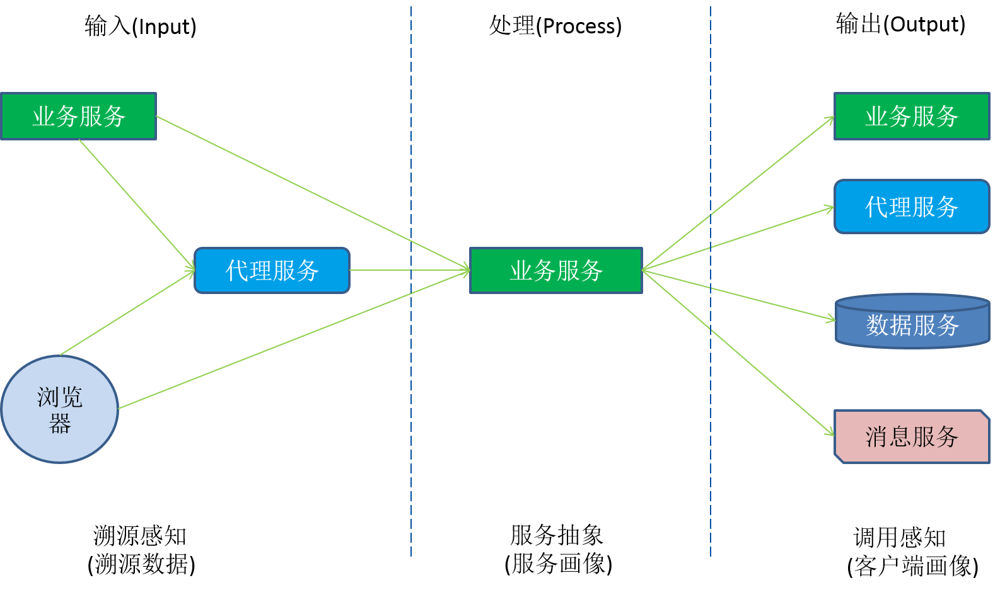
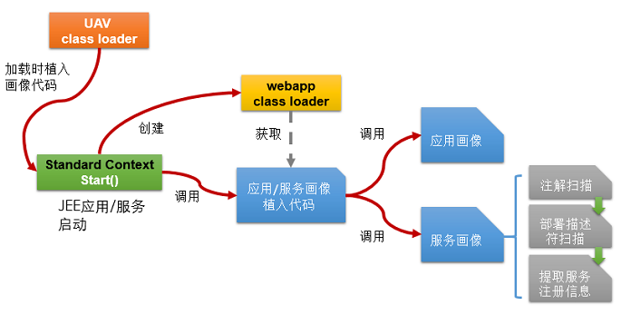
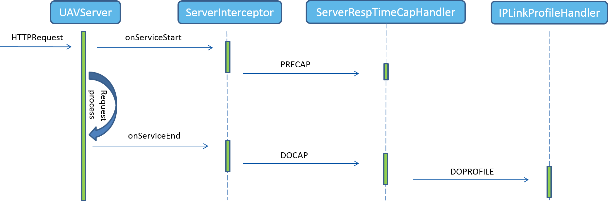
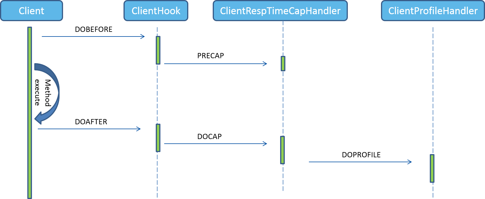

画像数据采集
画像数据
即静态数据，指的是在进程启动时即可得到的数据。包括操作系统相关的信息，程序相关的信息，程序启动后相关的初始化信息。
InterceptFrameworkSupportor由start方法启动，首先把listener添加到InterceptSupportor实例的listener属性中，然后通过JavaAgent的埋点遍历InterceptSupportor的Listeners，调用doIntercept方法，在该方法中调用InterceptEventListener的handleEvent方法，InterceptEventListener是各个listener的父类，实现不同的子listener处理不同的画像采集。

服务画像采集
服务画像描述了服务本体的信息，包括应用唯一标识（AppID），服务名（Service ID），服务实例的URI，服务接口的URI，服务接口的元数据（类，方法，入参出参，注解，部署描述符）。
服务画像由AppProfilingListener采集，其handleEvent方法调用startProfiling方法启动画像，最终通过StandardProfile.doProfiling完成实际的采集。
服务画像具体代码见com.creditease.uav.profiling.handlers.ComponentProfileHandler。

溯源数据采集
HTTP协议的Header中的字段可以帮助溯源，收集的数据有以下几种：
Client Address：直连客户端IP地址
X-Forwarded-For: 如果存在，则为代理路由地址链，则直连客户端为代理服务
Host：表明远程主机甚至端口信息，如果直连客户端是代理服务，则Host为代理IP地址和端口
User-Agent：代理描述，可用来区分浏览器还是程序客户端，当然还可以提取很多浏览器终端信息
UAV-Client-Src：HTTP客户端劫持加入的Header字段，用于应用间调用的拟合

客户端画像采集
客户端画像是通过对一系列常用中间件的客户端进行劫持来实现的，目前已支持同步/异步http、数据库jdbc、redis(jedis,aredis,lettuce)、mongodb、rocketmq/rabbitmq。
劫持通过javassist字节码改写、动态代理等AOP技术，在客户端的调用代码中嵌入uav的处理逻辑，获取调用相关的信息，如调用地址、调用协议、调用结果等。
画像数据基于调用地址、访问协议、调用结果的特征提取来确定目标服务。
1）调用地址：以类URI格式表示
- http/https服务（业务/代理服务）：http://<IP>:<port>/<service path>
- 关系型数据库（数据源服务）：jdbc:<数据库类型>://<IP>:<port>,<IP>:<port>/<数据库名>
- 非关系型数据库或缓存（数据源服务）：<数据源类型>://<IP>:<port>,<IP>:<port>/<数据库集合名>
- 消息队列（消息服务）：mq:<消息中间件类型>://<IP>:<port>/<队列名>
2）访问协议：某种访问动作。例如HTTP的POST，SQL插入，发送/订阅消息，redis的hgethashall，mongo的Collection操作等
3）访问结果特征：服务的基础栈类型，是否集群，例如nginx，tomcat，apache等
客户端画像具体代码见com.creditease.uav.profiling.handlers. ClientRespTimeCapHandler
